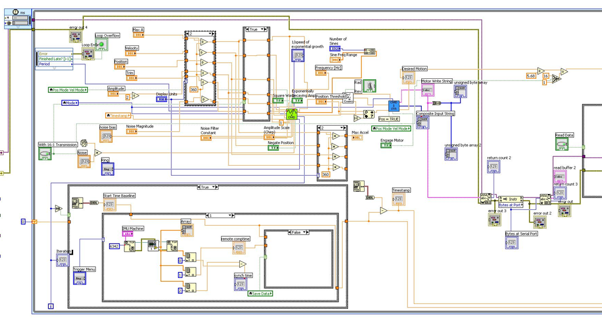
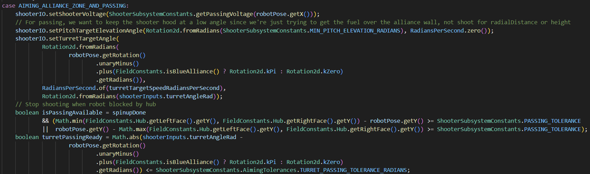
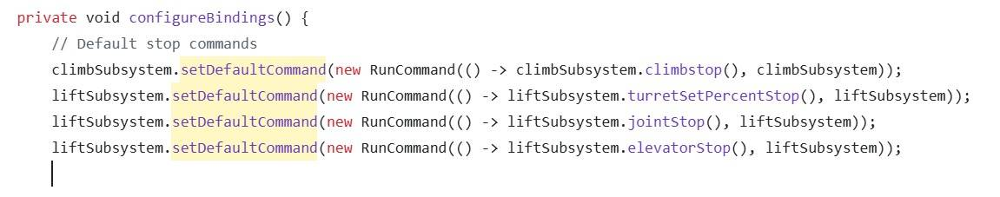
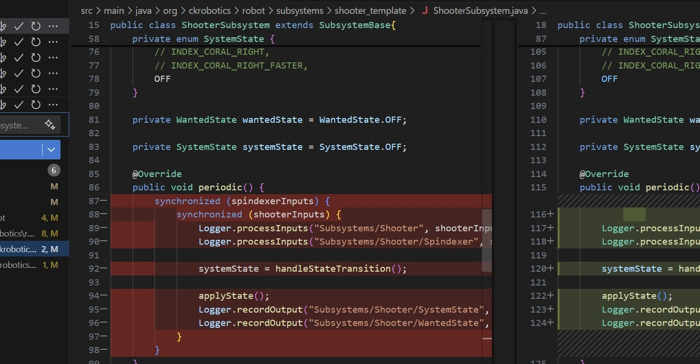
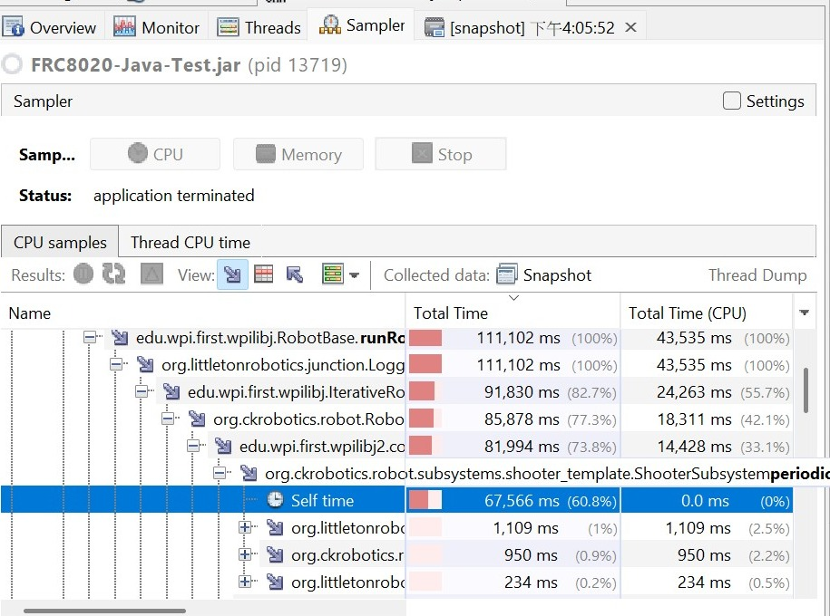
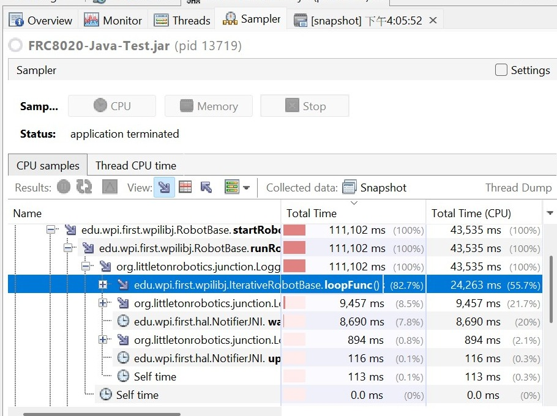

May–Dec 2025 · FRC Team 8020
Migrating robot software from LabVIEW to Java
Our team moved its robot programming workflow to Java. I learned the new command-based structure by adapting existing examples, building drivetrain and mechanism behavior, and debugging how commands interacted after integration.
CODE STRUCTURE
From LabVIEW’s dataflow to Java’s commands
These examples show the different structures used across the project: LabVIEW’s visual dataflow and Java’s text-based methods and subsystem calls. They help illustrate the kind of shift involved in the migration; they are examples of each environment, not a claim that these exact snippets are a line-by-line conversion.


01 / GETTING STARTED
Learn the framework while building real robot features
Early work focused on understanding how the Java robot code was organized. I worked with existing code and team examples rather than claiming to create the full software architecture from scratch.
DRIVETRAIN
Configure and tune drive behavior
I worked with a CTRE-generated drivetrain, adjusted its PID behavior, and added a driver slow-mode control. I also adapted a Team 2910 template for the team robot codebase.
SIMULATION
Explore hardware abstraction
I worked on a simulation implementation and a separate SwerveIOSIM file, then investigated why the simulated robot was not moving in AdvantageScope.
MECHANISMS
Build and connect robot mechanisms
I contributed to elevator and turret implementation, while learning how individual mechanism commands fit into the larger subsystem structure.
EARLY CODE WORK
Modify existing Java features
I worked on CANdle behavior and mode switching while tracing the existing program, using changes and debugging as a way to understand the Java robot framework.
02 / INTEGRATION DEBUGGING
Why did a mechanism keep moving after the stick was released?
During Lift subsystem integration, mechanisms that behaved individually began interfering when brought together. One observed symptom was continued turret movement after joystick release, alongside unexpected joint movement.
Tracing command ownership
- I traced the behavior to multiple default commands being assigned to the same subsystem, so later assignments replaced earlier ones.
- I then worked through command conflicts that remained when trying to operate more than one mechanism at a time.
- After revising the setup, I reported that the conflicts were resolved and confirmed testing multiple motors simultaneously.

This is a reported integration test result, not a quantified performance benchmark.
03 / TIMING DEBUGGING
Nested synchronization contributed to loop overruns
We also faced synchronization errors that caused overruns. The code diff shows nested locks around the subsystem input and logging work in ShooterSubsystem.periodic(); we removed those synchronized sections to keep the periodic loop from waiting on nested locks.



Profiler times are accumulated across the capture interval; they are not the duration of a single robot loop.
05 / TEST EVIDENCE
Simulation views and robot footage
The screen recording shows the AdvantageScope field and pose views. The other clip shows the physical robot on the field. These provide context for the simulation work and robot software, without implying a measured mechanism test result.
04 / WHAT I TOOK AWAY
A subsystem can work alone and still fail when integrated
The migration taught me to follow how commands claim and control subsystems, and to test behavior after features are combined. The hardest issue was not translating syntax: it was making the shared command structure behave predictably across mechanisms.
Scope and attribution: this was a collaborative team migration. The project notes support my contributions to drivetrain configuration, simulation work, mechanism implementation and command debugging; they do not support claiming sole ownership of the codebase or migration.